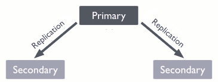

In the Kubernetes Made Simple blog post, we covered Kubernetes fundamentals such as Pods, Deployments, Services, ConfigMaps, Secrets, port forwarding, and Ingress. Now, in this blog post, let's learn how to deploy MongoDB on Kubernetes using a StatefulSet and a headless Service to enable stable DNS names, persistent storage, and high availability with replica sets. This guide covers setting up a MongoDB replica set with two members, configuring the StatefulSet and Service manifests, and verifying the deployment to ensure data redundancy and resilience against pod failures.

MongoDB is often deployed as a replica set to provide high availability and data redundancy.
In Kubernetes, the recommended way is to use a StatefulSet combined with a
headless Service for stable Pod DNS names.
A headless Service (clusterIP: None) does not load balance traffic like a normal
Service.
Instead, it assigns each Pod in a StatefulSet its own stable DNS name, in the format:
<pod-name>.<service-name>.<namespace>.svc.cluster.localFor example, a StatefulSet with 2 MongoDB Pods will have DNS entries like:
mongo-0.mongo-service.user-management-db.svc.cluster.localmongo-1.mongo-service.user-management-db.svc.cluster.localThis allows MongoDB or any clustered application to connect directly to each replica, which is essential for replication and failover. Without a headless Service, clients would only see a single IP and could not address individual Pods.
# mongo-headless-svc.yaml
apiVersion: v1
kind: Service
metadata:
name: mongo-service # Headless service name, must match StatefulSet's serviceName
namespace: user-management-db # Runs inside the user-management-db namespace
spec:
ports:
- port: 27017 # Exposes MongoDB on its default port
name: mongo # Port name used by clients to reference
clusterIP: None # No cluster IP; enables stable DNS for StatefulSet pods
selector:
app: mongo # Routes traffic to pods with label app=mongo
A StatefulSet is used to run MongoDB Pods that need a stable identity and persistent storage. This is important for a replica set to work correctly.
mongo-0,
mongo-1. Even if the Pod stops and restarts or rescheduled (moved to another node in the cluster),
its name and DNS address remain the same. DNS names are in the format:
<pod-name>.<service-name>.<namespace>.svc.cluster.local.
volumeClaimTemplates. This means its data is preserved across restarts, crashes, or rescheduling.
Together with a headless Service, this ensures:
# mongo-statefulset.yaml
apiVersion: apps/v1
kind: StatefulSet
metadata:
name: mongo # Name of the StatefulSet (base name for pods: mongo-0, mongo-1, etc.)
namespace: user-management-db # Namespace where MongoDB will run
spec:
serviceName: "mongo-service" # Must match the headless Service for stable DNS resolution
replicas: 2 # Number of MongoDB replicas in the replica set
selector:
matchLabels:
app: mongo # Ensures StatefulSet manages only Pods with this label
template:
metadata:
labels:
app: mongo # Label added to Pods so they are matched by the StatefulSet
spec:
containers:
- name: mongo # Container name
image: mongo:7.0 # MongoDB version 7.0 Docker image
command: # Override default command to enable replica set mode
- "mongod"
- "--replSet=rs0" # Initialize replica set named "rs0"
- "--bind_ip=0.0.0.0" # Allow connections from all network interfaces
ports:
- containerPort: 27017 # MongoDB default port inside the Pod
volumeMounts:
- name: mongo-persistent-storage # Attach persistent volume
mountPath: /data/db # MongoDB data directory (persists data across Pod restarts)
volumeClaimTemplates:
- metadata:
name: mongo-persistent-storage # Name referenced in volumeMounts above
spec:
accessModes: [ "ReadWriteOnce" ] # Only one Pod can mount the volume at a time (per node)
resources:
requests:
storage: 1Gi # Request 1Gi of persistent storage for each replica
Apply both the Service and StatefulSet manifests into the user-management-db namespace:
kubectl apply -f mongo-headless-svc.yaml -n user-management-db
kubectl apply -f mongo-statefulset.yaml -n user-management-db
kubectl get pods -n user-management-db
Once the MongoDB Pods are up and running, you need to initialize the replica set so that clients can discover the
primary and perform writes. Without this step, you’ll see errors like
MongoServerError[NotYetInitialized] when checking status.
kubectl get pods -n user-management-db
# Example output:
NAME READY STATUS RESTARTS AGE
mongo-0 1/1 Running 0 5m57s
mongo-1 1/1 Running 0 2m45s
kubectl exec -it mongo-0 -n user-management-db -- mongosh
test> rs.status()
MongoServerError[NotYetInitialized]: no replset config has been received
This error is expected because the replica set is not yet initialized.
test> rs.initiate({
_id: "rs0",
members: [
{ _id: 0, host: "mongo-0.mongo-service.user-management-db.svc.cluster.local:27017" },
{ _id: 1, host: "mongo-1.mongo-service.user-management-db.svc.cluster.local:27017" } // IMPORTANT: include this so apps can connect to both nodes
]
})
{ ok: 1 }
rs0 [direct: other] test> rs.status()
{
set: 'rs0',
members: [
{ _id: 0, name: "mongo-0.mongo-service.user-management-db.svc.cluster.local:27017", stateStr: "PRIMARY", ... },
{ _id: 1, name: "mongo-1.mongo-service.user-management-db.svc.cluster.local:27017", stateStr: "SECONDARY", ... }
],
...
}
After initialization, applications should connect using the replica set URI. This ensures automatic failover if one Pod goes down:
mongodb://mongo-0.mongo-service.user-management-db.svc.cluster.local:27017,
mongo-1.mongo-service.user-management-db.svc.cluster.local:27017/user_management?replicaSet=rs0
<pod-name>.<service-name>.<namespace>.svc.cluster.local.
Example: mongo-0.mongo-service.user-management-db.svc.cluster.local.
This is what makes replica set members discoverable in Kubernetes.
Once MongoDB Pods are running, you can connect directly to a Pod or connect via the replica set connection string. The behavior is different:
kubectl exec -it mongo-0 -n user-management-db -- mongosh
This opens a shell connected to 127.0.0.1:27017 inside mongo-0.
You can run commands, but you may hit errors like:
MongoServerError[NotWritablePrimary]: not primaryThis happens because you’re talking to a single secondary node in the replica set. By default, secondaries cannot perform write operations.
kubectl exec -it mongo-0 -n user-management-db -- bash
mongosh "mongodb://mongo-0.mongo-service.user-management-db.svc.cluster.local:27017,
mongo-1.mongo-service.user-management-db.svc.cluster.local:27017/user_management?replicaSet=rs0"
Using the replica set connection string tells the MongoDB driver to discover all members and automatically route writes to the primary. In this case, you’ll see:
rs0 [primary] user_management> db.users.deleteMany({})
{ acknowledged: true, deletedCount: 1 }
When connecting, MongoDB may show warnings such as:
Access control is not enabled: authentication is not configured yet (open access).You are running this process as root: the Pod runs as root by default in this simple manifest.
vm.max_map_count is too low: kernel tuning recommendation, usually safe for dev.These are normal in a simple demo deployment but should be addressed in production.
For local development or testing, you can run a single MongoDB container with replica set enabled.
Enabling the replica set is important for applications expecting replicaSet in the connection string.
This is simpler than a full StatefulSet in Kubernetes but lacks cluster-level stability and scaling.
docker run -d \
--name curity-mongo \
-p 27017:27017 \
mongo:7.0 \
--replSet rs0 \
--bind_ip_all
The --replSet rs0 flag enables replica set mode, and --bind_ip_all allows connections
from outside the container.
docker exec -it curity-mongo bash
mongosh
# Initialize the replica set
rs.initiate()
rs.status()
# Required to connect from outside the container using localhost
cfg = rs.conf()
cfg.members[0].host = "localhost:27017"
rs.reconfig(cfg, {force: true})
rs.status()
use user_management
# Connection string for apps without mongodb authentication:
mongodb://localhost:27017/user_management?replicaSet=rs0
# Create namespaces
kubectl create namespace user-management-db
kubectl apply -f mongo-headless-svc.yaml -n user-management-db
kubectl apply -f mongo-statefulset.yaml -n user-management-db
kubectl get pods -n user-management-db
kubectl exec -it mongo-0 -n user-management-db -- mongosh
rs.initiate()
rs.status()